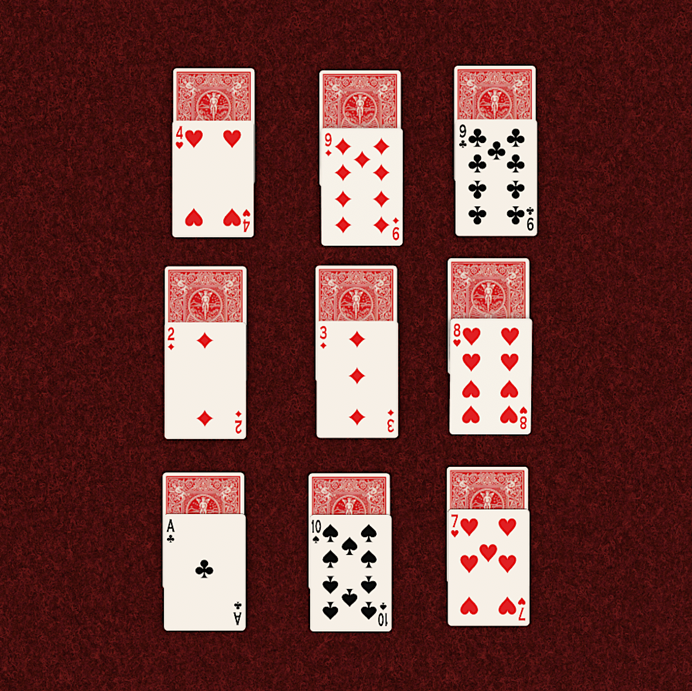

/top-solitaire-card-games-412483-Final-cadc286873e64ccaba81bfd49d015f4e.png)
Rulesheet Post 2 | Crab Coat Solitaire v.2
Group 11
Members: Ashton (partner dropped the class)
Crab Coat Solitaire is a heavy modification solitaire in shape and procedure. This form of solitaire shifts the objective from the straightforward solution of uncovering all cards and moving them to the 4 stacks of suits, to alignment of card stacks in a grid. The goal is to create a pattern of black and red, with each pattern having a unique name and difficulty.
The player can then move revealed cards of adjacent value onto each other. This is the basic game play procedure the player undergoes for most of the game. As the player reduces the number of stacks and unrevealed cards they should keep in mind that they need to form a pattern. If the player ends up with a set of top cards that cannot be moved, then they have lost.
Some significant modifications to the game since the last post came once again in the difficulty department. The distribution diagram is no longer really necessary as the distribution is even across the 3 by 3 square with 4 cards in each pile. This leaves 16 cards left over to be the reintroduction of the Stock and Waste piles from regular solitaire.
This solution came from play testing and getting a feel for what players liked about the game. The game seemed to have a learning curve but it was rewarding to learn how to play. The flexibility of the game seemed to spark interest and the addition of this new feature would allow greater ease and simpler setup. I'm a little concerned that this might make the game too easy but this can be changed later with more play testing very easily by taking cards from the stock and adding them back to the board. (Realizing right now that I should probably make a diagram of the way the game is setup with actual labels.)
Changes to the wording of the rule sheet were made to help clarify things that were confusing to play testers. I should continue this process and a couple of the rule sheets that I play tested personally impressed me with how concise and well defined they were. I might be hindered by the novelty of this game in comparison to the more familiar vanilla solitaire but there's absolutely more improvements to be made. Players definitely were skimming over the rule sheet so I also added some underlines to hopefully catch their eye with some of the most important stuff.
The play-testing experience was extremely valuable and I learned a lot about what changes I want to try and where to improve the game. Before the play test I was pretty unsure but seeing how other players responded to the game helped a ton.
Reviews of the rule sheet itself indicated that they found the patterns gimmick fun but this does contradict a seeming disinterest in the patterns from play testing. I was previously doubting if they should be included at all, but they are ultimately not a huge influence on game play as long as the patterns are plentiful.